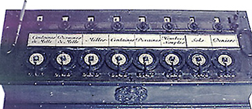

Mit 19 Jahren erfand Blaise Pascal(1623-1662) ein achtstelliges Rechengerät, "Pascalin" genannt. Der Pascalin konnte achtstellige Zahlen addieren und substrahieren. Ungefähr fünfzig dieser Geräte wurden hergestellt, danach wurde die Produktion mangels kommerziellen Erfolges und Interesses eingestellt. Erst 300 Jahre später machte die Elektronik Rechenmaschinen allgemein populär.